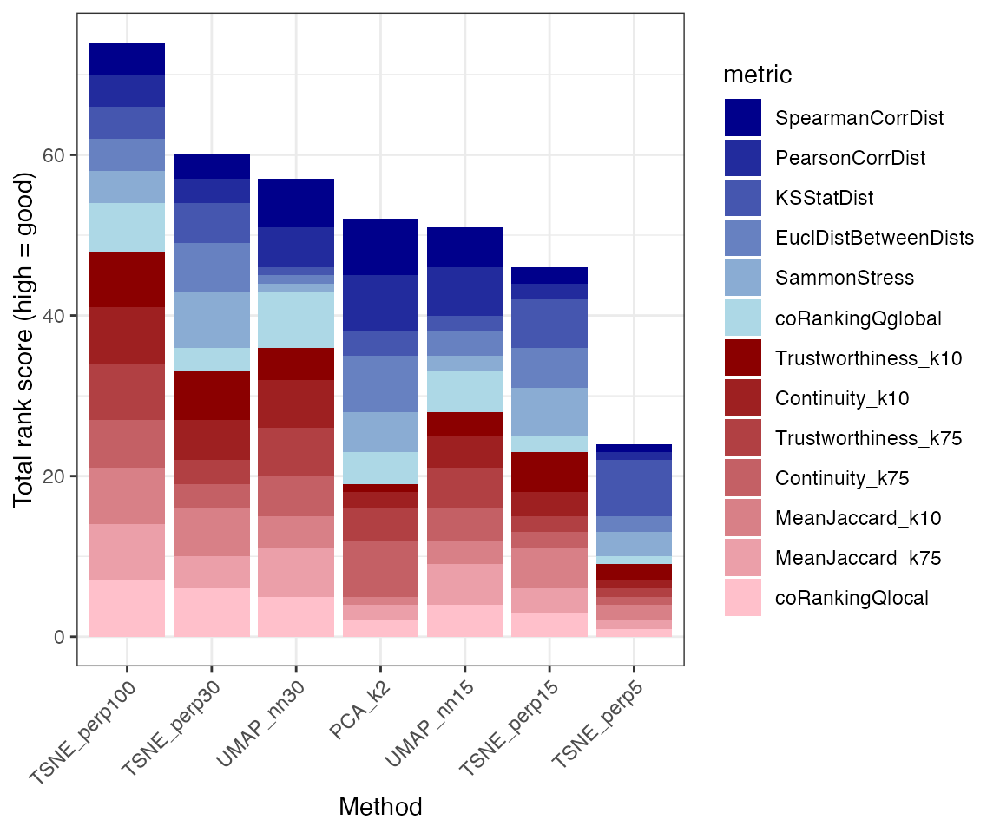

Introduction
The primary aim of the dreval package is to evaluate and compare one or more reduced dimension representations, in terms of how well they retain the structure from a reference representation. Here, we illustrate its application to a single-cell RNA-seq data set of peripheral blood mononuclear cells (PBMCs), representing a subset of the pbmc3k data set from the TENxPBMCData package. The set of genes has been subset to only highly variable ones, and several dimension reduction methods (PCA, tSNE and UMAP) have been applied.
data(pbmc3ksub)
pbmc3ksub
#> class: SingleCellExperiment
#> dim: 1804 2700
#> metadata(1): log.exprs.offset
#> assays(2): counts logcounts
#> rownames(1804): LYZ S100A9 ... AGTRAP ATXN1L
#> rowData names(3): ENSEMBL_ID Symbol_TENx Symbol
#> colnames(2700): Cell1 Cell2 ... Cell2699 Cell2700
#> colData names(11): Sample Barcode ... Individual Date_published
#> reducedDimNames(8): PCA PCA_k2 ... UMAP_nn15 UMAP_nn30
#> mainExpName: NULL
#> altExpNames(0):Evaluation
The dreval() function is the main function in the package, and calculates several metrics comparing each of the reduced dimension representations in the SingleCellExperiment object to the designed reference representation. Here, we use the underlying normalized and log-transformed data contained in the logcounts assay as the reference representation. For a list of the calculated metrics, see the help page for dreval().
Result visualization
The output of dreval() is a list with two elements. The plots entry contains several diagnostic plot objects, while the scores entry contains the calculated scores for each of the evaluated reduced dimension representations. These can be summarized visually with the plotRankSummary() function.
dre$scores
#> Method dimensionality SpearmanCorrDist PearsonCorrDist KSStatDist
#> D...1 PCA 25 0.7962542 0.8087525 0.3341563
#> D...2 PCA_k2 2 0.6613591 0.6490296 0.5162004
#> D...3 TSNE_perp30 2 0.6722602 0.6331125 0.3845050
#> D...4 TSNE_perp5 2 0.4415601 0.4117862 0.4008497
#> D...5 TSNE_perp15 2 0.6276656 0.6007944 0.3872786
#> D...6 TSNE_perp100 2 0.6563543 0.6143211 0.4093387
#> D...7 UMAP_nn15 2 0.6242365 0.6012283 0.4338838
#> D...8 UMAP_nn30 2 0.6407776 0.5936279 0.4563287
#> EuclDistBetweenDists SammonStress Trustworthiness_k10 Continuity_k10
#> D...1 0.2611597 0.07110633 0.9196582 0.9226114
#> D...2 0.5195119 0.28185234 0.8188116 0.8649024
#> D...3 0.3976007 0.16582150 0.8562770 0.8773783
#> D...4 0.4089707 0.17168275 0.8378097 0.8338551
#> D...5 0.3925202 0.16106902 0.8534402 0.8664594
#> D...6 0.4566742 0.22123437 0.8638068 0.8859889
#> D...7 0.5278167 0.29808779 0.8485342 0.8684813
#> D...8 0.5739818 0.35184085 0.8476095 0.8765003
#> Trustworthiness_k75 Continuity_k75 MeanJaccard_k10 MeanJaccard_k75
#> D...1 0.9160966 0.9242192 0.1839359 0.4157481
#> D...2 0.8523323 0.8815153 0.1175642 0.3107890
#> D...3 0.8577549 0.8806353 0.1416913 0.3245530
#> D...4 0.8049247 0.8160621 0.1320399 0.2775442
#> D...5 0.8501598 0.8667562 0.1377692 0.3234171
#> D...6 0.8597978 0.8928720 0.1412174 0.3399719
#> D...7 0.8540697 0.8791007 0.1294400 0.3280102
#> D...8 0.8593974 0.8914481 0.1307935 0.3335082
#> coRankingQlocal coRankingQglobal KmaxLCMC
#> D...1 0.3668584 0.2467630 116
#> D...2 0.2623893 0.1849489 125
#> D...3 0.2843121 0.1842542 128
#> D...4 0.2224860 0.1281159 103
#> D...5 0.2790515 0.1689438 132
#> D...6 0.2945328 0.1934719 122
#> D...7 0.2772989 0.1804025 121
#> D...8 0.2863490 0.1928456 122
suppressPackageStartupMessages({
library(ggplot2)
})
cowplot::plot_grid(plotlist = lapply(dre$plots$disthex, function(w) w +
theme(axis.title = element_text(size = 7))), ncol = 2)
plotRankSummary(dre$scores) +
theme(axis.text.x = element_text(angle = 45, hjust = 1, vjust = 1))
Using a reduced dimension representation as the reference space
In the example above, we used the original feature space (the logcounts assay) as the reference space, to which all reduced dimension representations were compared. It is also possible to use one of the reduced dimension representations as the reference space, as we will illustrate here.
dre <- dreval(
sce = pbmc3ksub, refType = "dimred", refDimRed = "PCA",
dimReds = NULL, nSamples = 500, kTM = c(10, 75),
verbose = FALSE, distNorm = "l2"
)
dre$scores
#> Method dimensionality SpearmanCorrDist PearsonCorrDist KSStatDist
#> D...1 PCA_k2 2 0.9178883 0.9138804 0.30229259
#> D...2 TSNE_perp30 2 0.7893502 0.7688569 0.13964729
#> D...3 TSNE_perp5 2 0.5872306 0.5701276 0.09878156
#> D...4 TSNE_perp15 2 0.7396655 0.7242425 0.12038477
#> D...5 TSNE_perp100 2 0.8076620 0.7937997 0.23121443
#> D...6 UMAP_nn15 2 0.8028217 0.8009219 0.33264128
#> D...7 UMAP_nn30 2 0.8528817 0.8132049 0.39119038
#> EuclDistBetweenDists SammonStress Trustworthiness_k10 Continuity_k10
#> D...1 0.3023384 0.1247879 0.9096512 0.9421474
#> D...2 0.2935189 0.1001133 0.9627203 0.9634019
#> D...3 0.3714152 0.1515320 0.9424846 0.9427298
#> D...4 0.3091135 0.1095014 0.9558654 0.9571104
#> D...5 0.3221371 0.1258744 0.9632908 0.9673701
#> D...6 0.3787497 0.1865769 0.9519059 0.9597317
#> D...7 0.4138504 0.2249333 0.9528211 0.9642138
#> Trustworthiness_k75 Continuity_k75 MeanJaccard_k10 MeanJaccard_k75
#> D...1 0.9317865 0.9514147 0.1754326 0.4638150
#> D...2 0.9367050 0.9457699 0.3378309 0.5210975
#> D...3 0.8783594 0.8967114 0.2762378 0.4388034
#> D...4 0.9277548 0.9366558 0.3147195 0.5070044
#> D...5 0.9440231 0.9539015 0.3406276 0.5506444
#> D...6 0.9337289 0.9473131 0.3007523 0.5159154
#> D...7 0.9376223 0.9503720 0.3032279 0.5223833
#> coRankingQlocal coRankingQglobal KmaxLCMC
#> D...1 0.4077324 0.2701291 123
#> D...2 0.4819403 0.2661027 55
#> D...3 0.4123759 0.1987152 53
#> D...4 0.4620017 0.2513565 55
#> D...5 0.4981295 0.2820545 55
#> D...6 0.4531186 0.2630912 55
#> D...7 0.4609987 0.2823660 55
cowplot::plot_grid(plotlist = lapply(dre$plots$disthex, function(w) w +
theme(axis.title = element_text(size = 7))), ncol = 2)
plotRankSummary(dre$scores) +
theme(axis.text.x = element_text(angle = 45, hjust = 1, vjust = 1))
Computational efficiency
dreval relies heavily on the calculation of pairwise distances among samples, and is consequently computationally demanding for large data sets. The dreval() function allows for subsampling a smaller number of samples, as well as selecting a subset of the variables, to speed up calculations and reduce the memory footprint. Here we illustrate that for the example data set, the calculated metrics are stable under subsampling of cells.
suppressPackageStartupMessages({
library(dplyr)
library(tidyr)
library(ggplot2)
})
set.seed(1)
nS <- c(100, 400, 1000, 1500, 2700)
v <- lapply(nS, function(n) {
if (n == 2700) nR <- 1
else nR <- 2
lapply(seq_len(nR), function(i) {
message(n, " samples, replicate ", i)
dreval(sce = pbmc3ksub, refAssay = "logcounts", dimReds = NULL,
nSamples = n, kTM = 50, verbose = FALSE)$scores %>%
dplyr::mutate(nSamples = n, replicate = i)
})
})
vv <- do.call(dplyr::bind_rows, v)
vv <- vv %>%
tidyr::gather(
key = "measure", value = "value",
-Method, -dimensionality, -nSamples, -replicate
)
suppressWarnings(
ggplot(vv, aes(x = nSamples, y = value, color = Method)) +
geom_point(size = 3) + facet_wrap(~ measure, scales = "free_y") +
geom_smooth(se = FALSE) + theme_bw()
)Session info
sessionInfo()
#> R Under development (unstable) (2021-02-07 r79964)
#> Platform: x86_64-apple-darwin17.0 (64-bit)
#> Running under: macOS Catalina 10.15.7
#>
#> Matrix products: default
#> BLAS: /Library/Frameworks/R.framework/Versions/4.1/Resources/lib/libRblas.dylib
#> LAPACK: /Library/Frameworks/R.framework/Versions/4.1/Resources/lib/libRlapack.dylib
#>
#> locale:
#> [1] en_US.UTF-8/en_US.UTF-8/en_US.UTF-8/C/en_US.UTF-8/en_US.UTF-8
#>
#> attached base packages:
#> [1] stats graphics grDevices utils datasets methods base
#>
#> other attached packages:
#> [1] ggplot2_3.3.3 dreval_0.1.4
#>
#> loaded via a namespace (and not attached):
#> [1] Rcpp_1.0.6 lattice_0.20-41
#> [3] tidyr_1.1.2 assertthat_0.2.1
#> [5] rprojroot_2.0.2 digest_0.6.27
#> [7] SingleCellExperiment_1.13.10 wordspace_0.2-6
#> [9] R6_2.5.0 GenomeInfoDb_1.27.6
#> [11] sparsesvd_0.2 stats4_4.1.0
#> [13] evaluate_0.14 highr_0.8
#> [15] pillar_1.4.7 coRanking_0.2.1
#> [17] zlibbioc_1.37.0 rlang_0.4.10
#> [19] hexbin_1.28.2 S4Vectors_0.29.7
#> [21] Matrix_1.3-2 rmarkdown_2.6
#> [23] pkgdown_1.6.1.9000 labeling_0.4.2
#> [25] textshaping_0.3.0 desc_1.2.0
#> [27] stringr_1.4.0 RCurl_1.98-1.2
#> [29] munsell_0.5.0 DelayedArray_0.17.7
#> [31] compiler_4.1.0 xfun_0.21
#> [33] pkgconfig_2.0.3 systemfonts_1.0.1
#> [35] BiocGenerics_0.37.1 htmltools_0.5.1.1
#> [37] tidyselect_1.1.0 SummarizedExperiment_1.21.1
#> [39] tibble_3.0.6 GenomeInfoDbData_1.2.4
#> [41] IRanges_2.25.6 matrixStats_0.58.0
#> [43] withr_2.4.1 crayon_1.4.1
#> [45] dplyr_1.0.4 MASS_7.3-53.1
#> [47] bitops_1.0-6 grid_4.1.0
#> [49] gtable_0.3.0 lifecycle_1.0.0
#> [51] DBI_1.1.1 magrittr_2.0.1
#> [53] scales_1.1.1 stringi_1.5.3
#> [55] cachem_1.0.4 farver_2.0.3
#> [57] XVector_0.31.1 fs_1.5.0
#> [59] ellipsis_0.3.1 ragg_1.1.0
#> [61] generics_0.1.0 vctrs_0.3.6
#> [63] cowplot_1.1.1 iotools_0.3-1
#> [65] tools_4.1.0 Biobase_2.51.0
#> [67] glue_1.4.2 purrr_0.3.4
#> [69] MatrixGenerics_1.3.1 parallel_4.1.0
#> [71] fastmap_1.1.0 yaml_2.2.1
#> [73] colorspace_2.0-0 cluster_2.1.1
#> [75] GenomicRanges_1.43.3 memoise_2.0.0
#> [77] knitr_1.31